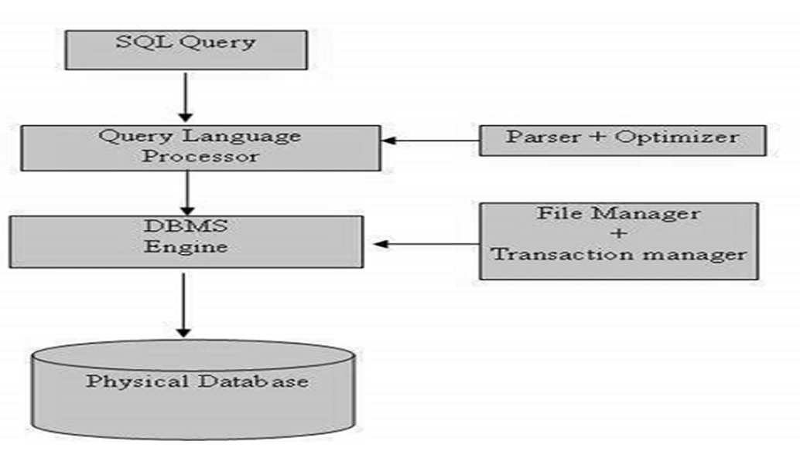

Que: What is RDBMS?
Ans : A Relational database management system (RDBMS) is a database management system (DBMS) that is based on the relational model as introduced by E. F. Codd.
NOTE:
1) The data in an RDBMS is stored in database objects which are called as tables.T
able consists of numerous columns and rows.
2) The tables are stored in the database in structures known as Schemas.
3)
Each row is called an entity, thus table as entity set.
4) Row is known as Tuple.
5) Columns are the properties called Attributes.
6) For an attribute, the set of permitted values is called domainof that attribute
Client/Server Side Database :
Client/Server databases run the DBMS as a processon the server and run a client database applicationon each client .
When the client application sends a request for data over the network to the server then the server receives the client request and the DBMS retrieves data from the database, performs the required processing on the data, and sends only the requested data back to the client over the network
Structured Query Language( SQL )
It is a computer language for storing, manipulating and retrieving data stored in a relational database.It's a standard language for relational database systems.
When SQL command is executed various optimizing parameters are considered
